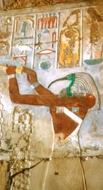

Той або Джехуті, в єгипетській міфології бог місяця, мудрості, рахунки і листи, покровитель наук, переписувачів, священних книг, творець календаря. Дружиною Тота вважалася богиня істини і порядку Маат. Священними тваринами Тота були ібіс і павіан, і тому бога часто зображували у вигляді людини з головою ібіса, іноді з папірусом і письмовим приладдям в руках. Приліт ібіса-Тота єгиптяни пов'язували з сезонними розливами Нілу. Коли Той повернув до Єгипту Тефнут (або Хатхор, як то кажуть в одному з міфів), природа розцвіла.
Той, що ототожнюється з місяцем, вважався серцем бога Ра і зображувався позаду Pa-сонця, оскільки мав славу його нічним заступником. Тоту приписувалося створення всієї інтелектуальної життя Єгипту. "Владика часу", він розділив його на роки, місяці, дні і вів їм рахунок. Мудрий Той записував дні народження і смерті людей, вів літописі, а також створив писемність і навчив єгиптян рахунку, письма, математики, медицини та інших наук.
Відомо, що його дочкою або сестрою (дружиною) була богиня листи Сешат; атрибут Тота - палетка переписувача. Під його заступництвом знаходилися всі архіви і знаменита бібліотека Гермополя, центру культу Тота. Бог "керував усіма мовами" і сам вважався мовою бога Птаха. Як візир і писар богів, Той був присутній на суді Осіріса і записував результати зважування душі небіжчика.
Оскільки Той брав участь у виправданні Осіріса і давав наказ про його бальзамування, то і брав участь в похоронному ритуалі всякого покійного єгиптянина і вів його в царство мертвих. На цій підставі Той ідентифікується з грецьким вісником богів Гермеса, який вважався психопомп ("провідним душі"). Той часто зображувався також разом з павіаном, одним з його священних тварин. Елліни ототожнювали бога Тота з Гермесом.